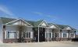

Find a Clinic
Greenfield

United Methodist Church
108 SW 5th St
Greenfield, Iowa 50849
6:00 - 8:00 p.m. on the 1st & 3rd Tuesdays of the month
5:30 - 6:00 p.m. Patient Registration
No appointment necessary
Waterloo
-itok=2aWWQHe2.jpg)
207 Logan Ave
Waterloo, Iowa 50703
Wednesdays, 9:00 a.m. - 5:00 p.m.
No appointment necessary
Boone

First United Methodist Church
703 Arden St
Boone, Iowa 50036
6:00 – 8:00 p.m. on the 1st & 3rd Tuesdays of the month
Doors Open at 5:00pm, first come-first served
No appointment necessary
An evening meal will be served.
Carroll
- 
23751 Highway 30 East
Carroll, Iowa 51401
4:30 – 8:30 p.m. on Thursdays
No appointment necessary
All patients must be registered by 7:00 p.m.
Mason City

Mercy Medical Center – North Iowa
1000 4th St, SW
Mason City, Iowa 50401
Please call 641-428-7887 for information.
Clinic Closing in Process, No Longer Offering Services.
Spencer

605 N Grand Ave
Spencer, Iowa 51301
3:00 – 9:00 p.m. on 1st & 3rd Thursdays of the month
2:00 - 6:00 p.m. Patient Registration
No appointment necessary
Dental
11:00 a.m. – 5:00 p.m. on Wednesdays (when Dentists are available)
If you are having dental issues you must be screened on the 1st or 3rd Thursday of the month during clinic hours. Patients will then be put on a waiting list. The current waiting list is over 6 months long.
Appointment only
Waukee

1155 SE Boone Drive
Waukee, Iowa 50263
5:30 – 7:00 p.m. on Mondays
Chiropratic Services offered the 4th Monday of each month
No appointment necessary
Lamoni
Lamoni United Methodist Church
E 9th St. & N Maple St.
Lamoni, Iowa 50140
2:00 - 4:00 p.m. on Tuesdays
No appointment necessary
Located inside Lamoni United Methodist Church
Estherville

205 N 7th St
Estherville, Iowa 51334
6:00 p.m. on the 2nd Tuesday of each month
No appointment necessary - must be checked in by 6:30 p.m.
Dental services offered on the 3rd Monday of each month from 6:00-9:00 p.m.
Dental is offered by appointment only - call #712-209-1213
Webster City

820 James St
Webster City, Iowa 50595
5:00 – 7:00 p.m. on 2nd & 4th Tuesday of each month
3:00 p.m. Doors Open
4:00 p.m. Patient Registration
No appointment necessary
Iowa City

2440 Towncrest Drive
Iowa City, IA,52240
For more information please visit our website: www.freemedicalclinic.org
Hours:6:00 - 9:00 p.m. on Mondays
8:45 -11:30 a.m. and 12:30 - 4:00 p.m. on Tuesdays
8:45 - 11:30 a.m. on Wednesdays
8:45 - 11:30 a.m. and 6:00 - 9:00 p.m. on Thursdays
Appointment only
Dental
To try to schedule an appointment please call the business line 319-337-7909.
Business Hours
9:00 a.m. - 4:00 p.m. Monday thru Thursday
9:00 a.m. - 12:00 p.m. on Fridays
Cedar Rapids

400 12th Street SE
Cedar Rapids, Iowa 52403
For more information, visit our website: http://www.hishandsclinic.org
Office hours: phones answered during office hours only
9:00 am - 4:00 pm, Monday through Thursday
9:00 am - Noon, Friday
Medical Clinic hours:
5:00 - 7:00 pm on Tuesdays & Thursdays
10:00 am - 2:00 pm on Wednesdays
10:00 am - 2:00 pm on Thursdays
Appointment only
Chiropractic Clinic hours:
Varies - call for appointment
Dental Clinic hours:
Varies - call to be added to wait list
Knoxville
First United Methodist Church, Activity Building
308 East Robinson
PO Box 344
Knoxville, Iowa 50138
6:00 – 7:30 p.m. on the 2nd & 4th Mondays of the month
5:30 – 7:00 p.m. Patient Registration
No appointment necessary
Pella
The Well Resource Center
419 East Oskaloosa Street
Pella, Iowa 50219
Please enter on the east side of the building.
Hours:6:00 – 7:00 p.m. on the 1st & 3rd Thursdays of the month
No appointment necessary
Clarinda

Clinic Location (north end)
216 W. Division
Clarinda, Iowa 51632
Mailing Address
Attention: Karen Marsh
220 Essie Davidson Drive
Clarinda, Iowa 51632
6:00 p.m. (SHARP) Patient Registration on the 1st, 2nd, & 3rd Thursdays of the month
If special circumstances arise please call Karen at 712-542-0702
No appointment necessary
Clive

2190 NW 82nd Street
Clive, Iowa 50325
5:30 - 7:30 p.m. on Mondays
No appointment necessary
Des Moines
5711 SW 9th St
Des Moines, Iowa 50315
Mailing Address
Christ the King Parish Office
820 Porter Ave
Des Moines, IA 50315
7:00 - 9:00 p.m. on Mondays
7:00 - 9:00 p.m. on Wednesdays is Pediatric Clinic
No appointment necessary
No Clinic Offering Wednesday, February 13th, 2019.
-itok=RAm4VnZH.jpg)
814 School St
Des Moines, Iowa 50309
9:00 a.m. – 12:00 p.m. on Saturdays
No appointment necessary
1607 East 33rd St
Des Moines, Iowa 50317
1:30 – 4:00 p.m. on Tuesdays
5:30 – 8:00 p.m. on Thursdays
No appointment necessary
-itok=I5-ijju_.jpg)
3700 Cottage Grove
Des Moines, Iowa 50311
5:30 - 7:30 p.m. on Tuesdays
5:00 - 7:00 p.m. Patient Registration
No appointment necessary

Highland Park Presbyterian Church
321 Euclid
Des Moines, Iowa 50313
4:00 - 7:00 p.m. on the 1st & 3rd Mondays of the month
Encourage Patients to call #712-292-9749 to make an appointment
Walk-Ins are welcome if registered before 5:30 p.m.
First Assembly of God Church
2725 Merle Hay Road
Des Moines, Iowa 50310
6:00 – 8:00 p.m. on Thursdays
5:30 – 7:00 p.m. Patient Registration
Clinic will close at 7:30 p.m. if patient numbers are low.
"Immunization Record" and "Physical Form" is required before a physical can be completed
No appointment necessary
Polk City

Polk City United Methodist Church
1421 West Broadway
Polk City, Iowa 50226
6:00 – 8:00 p.m. on the 1st & 3rd Wednesdays of the month
No appointment necessary
West Des Moines
Eddie Davis Community Center
1312 Maple St
West Des Moines, Iowa 50265
Hours:
7:00 – 9:00 p.m. on Tuesdays
7:00 - 9:00 p.m. on the 3rd Tuesday of the month is Orthopedic Clinic
No appointment necessary
Grinnell
_0-itok=gzAKeMzv.jpg)
306 4th Ave
Grinnell, Iowa 50112
2:00 - 4:00 p.m. on the 1st Thursday of each month
Please call 641-236-2385 for an appointment
Appointment only
Bettendorf

Bettendorf Community Center
2204 Grant St
Bettendorf, IA 52722
Pediatric Clinic: 3rd Saturday of each month
Appointment only - please call 563-344-4527
Adult Clinic: 10:00 a.m. - Noon on the 3rd Saturday of each month
9:30 a.m. - 10:30 a.m. Patient Registration
No appointment necessary
Ottumwa

610 East Main Street
Ottumwa, Iowa 52501
6:00 - 8:30pm on Tuesdays
No appointment necessary
Norwalk
Crossroads Church
2601 Border St
Norwalk, Iowa 50211
6:00 - 8:00 p.m. on the 1st & 3rd Thursdays of the month
Registration begins at 5:45 p.m.
No appointment necessary
Decorah

604 W. Broadway St
Decorah, Iowa 52101
6:00 – 8:00 p.m. on Thursdays
5:00 – 6:00 p.m. Patient Registration (all patients must arrive by 6:00 p.m.)
Please call 563-419-0962 for more information
No appointment necessary